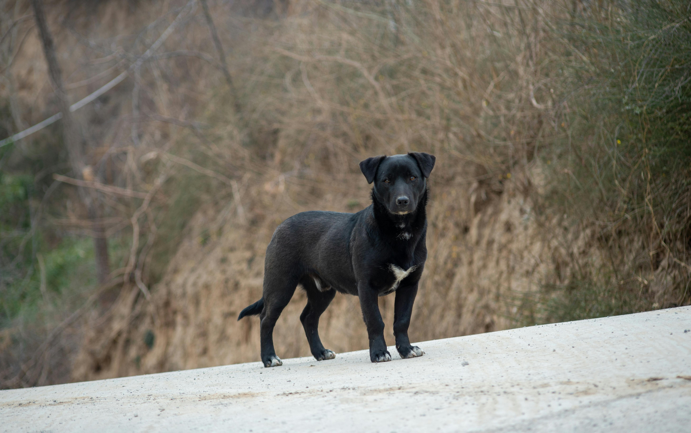
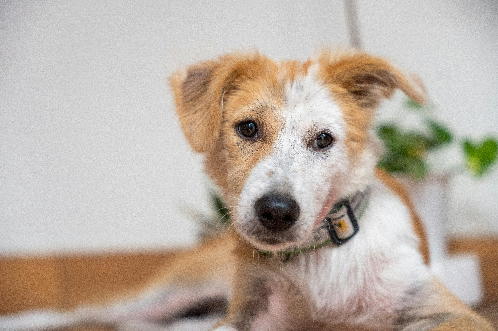

Rescuekoirat Suomessa
Suomessa on paljon rescuetoimintaa, pääosin ulkomaisten ja kotimaisten kodittomien tai kodinvaihtajakoirien pelastamista ja adoptointia uusiiin koteihin. Toimintaa pyörittää rekisteröidyt yhdistykset ja vapaaehtoiset. Suurin osa Suomessa adoptioon tulevista koirista tuodaan Romaniasta, Liettuasta ja Latviasta, Espanjasta ja Portugalista ja Balkanin alueelta. Koirat tuodaan Suomeen yleensä yhteistyötarhalle tulon jälkeen. Paikallinen yhteistyötaho hoitaa koiraa, Suomalainen yhdistys tekee valinnan ja arvioinnin, koira tuodaan Suomeen kotihoitoon tai etsii kodin tarhalla asuessa hakemusten ja haastatteluiden perusteella.

Koirat kuljetetaan Suomeen lentokoneilla ja rekoilla. Suomalaiset yhdistykset eivät ole yrityksiä, vaan ne koostuvat vapaaehtoisista työntekijöistä ja rahoitus tulee adoptiomaksuista ja lahjoituksista. Koirat käyvät eläinlääkäritarkastuksessa, rokotuksissa, mikrosirutuksessa ja steriloinnissa. Suomen rescuekenttä on hyvin valvottu, mutta ei yhtenäinen.
Rescuekoirat maailmalla
Ulkomailla rescuetoimintaa on eniten Romaniassa, Espanjassa ja Portugalissa, Kreikassa, Bulgariassa ja muissa Itä-Euroopan maissa. Myös USAssa ja Aasian maissa. Kodittomia koiria on paljon korkean syntyvyyden, hylättyjen lemmikkien, heikon eläinsuojelulainsäädännön ja köyhyyden ja resurssien puutteen takia. Katukoirakannat ovat suuria erityisesti Etelä- ja Itä-Euroopassa. Rescuetoiminnassa ulkomailla paikalliset eläinsuojelijat tai tarhat keräävät koiria, yhdistykset hoitavat rokotukset, steriloinnit ja mikrosirut, ja koira jää paikalliseen kotiin tai matkustaa adoptoitavaksi ulkomaille. Tavoitteena on vähentää katukoirien määrää, parantaa eläinten elinojoja ja sterilointien avulla ehkäistä uutta ylikansoitusta. Amerikassa koirat tulevat usein kadulta tai omistajien hylkääminä, ja iso osa toiminnasta on kotimaista.

Yleisimpiä koiratarhoja ovat kaupungin tarhat ja ‘no-kill shelters’ joissa eläimiä ei lopeteta kapasiteetin lisäämiseksi. Amerikassa on iso väestö, jonka seurauksena myös paljon lemmikkejä. Monet ottavat koiria, joille eivät pärjääkään (mm. pitbull, malinois, husky), ja useat niistä ovat ns. ‘backyard breedereiltä’. Sterilointi ei myöskään ole niin yleistä, ja joissain osavaltioissa ongelma on suurempi. Amerikan ‘no kill’ liikkeen tavoitteena on olla lopettamatta terveitä eläimiä tilan puutteen vuoksi. Yhdistykset keskittyvät adoptointiin ja kotihoitajien saamiseksi koirille. Liike on iso osa Amerikan rescuekulttuuria. Kotihoitotoiminnassa koirat asuvat vapaaehtoisten kodeissa ennen adoptiota. Se auttaa arvioimaan koiran luonnetta ja kotikäytöstä, jolloin sopivan kodin löytäminen ja mm. koulutuksen tarpeen arvioiminen on helpompaa. Kotihoitajat ovat erittäin yleisiä Amerikassa verrattuna muihin maihin. Interstate ja international rescue on myös yleistä Amerikassa.

Koiria siirretään osavaltioiden välillä (paljon mm. etelästä pohjoiseen), joskus myös Kanadaan tai Eurooppaan. Amerikan haasteita ovat mm. eri osavaltioiden erilaiset lait, ylikuormitetut tarhat ja eutanasia, jos tilaa ei ole. Myös tietyt rodut, kuten pitbull, husky ja malinois kokevat enemmän hylkäämistä, ja mustat koirat, jota kutsutaan nimellä ‘black dog syndrome’.
Eettisyys
Rescuetoiminnassa on myös paljon kyseenalaistettavia asioita. Suomessakin on jo paljon kotia tarvitsevia koiria, joten tarvitseeko niitä tuoda lisää ulkomailta? Nekin tarvitsevat kodit kyllä, mutta mm. Espanjassa podencot hylätään metsästyskausien jälkeen. Suomeen tuodaan myös paljon terveysriskejä ulkomailta. Rescue voi olla myös koskaan sopeutumatta uuteen elämään, joten se eläisi koko loppuelämän stressaantuneena. Myös täysin vammautuneita koiria adoptoidaan ja kuljetetaan, mm, puuttuvan jalan kanssa.

Adoptointi ei myöskään täysin ratkaise katukoiraongelmaa, aina tulee olemaan takapihakasvattajia ja ihmisiä, jotka eivät steriloi/kastroi koiriaan. Koirat tuodaan lentokoneilla ja rekoilla täynnä stressaantuneita, haukkuvia koiria, joka voi usein olla todella traumatisoivaa koiralle. Kaikki järjestöt eivät myöskään ole täysin läpinäkyviä ja eettisiä, ja jotkut tekevät toimintaa vain rahan toivossa. Koirilla voi myös olla käytösongelmia ja reaktiivisuutta, joka voi olla geneettistä, jolloin siitä ei tulla pääsemään eroon ja koira kärsii. Koiria voidaan kaltoinkohdella myös tarhoilla. HESYlle ja muille kotimaisille löytöeläintaloille jää koirat, koska niitä otetaan mieluummin ulkomailta, koska se on 'trendikkäämpää'.
Rescuekoirako minulle?
Rescuekoiran adoptio voi olla palkitseva kokemus, mutta se vaatii aikaa, kärsivällisyyttä ja pitkäaikaista sitoutumista. Koiran taustasta ja aiemmista kokemuksista ei välttämättä ole kattavia tietoja, ja monet tavalliset asiat, kuten sisätilat, hihnassa kulkeminen, vieraat ihmiset tai kodinkoneiden äänet, voivat tuntua siitä pelottavilta. Kotiutuminen ja luottamuksen rakentuminen voivat kestää viikoista jopa vuosiin. Siksi ennen adoptiopäätöstä on tärkeää perehtyä rescuekoirien erityistarpeisiin ja arvioida realistisesti, sopiiko oma elämäntilanne koiran tarpeisiin.
Valmistautuminen ja koiran tarpeiden ymmärtäminen
Rescuekoira voi olla arka, tottumaton kotioloihin tai reagoida voimakkaasti uusiin tilanteisiin aiempien kokemustensa vuoksi. Eri taustaiset koirat, kuten tarhalla, kadulla tai kotihoidossa eläneet koirat, voivat tarvita erilaista tukea sopeutuessaan uuteen ympäristöön. Esimerkiksi yksinolon harjoittelu, hihnassa kulkeminen ja uusiin ihmisiin tutustuminen tulee aloittaa vähitellen koiran valmiuksien mukaan. Palkitsemiseen ja positiiviseen vahvistamiseen perustuvat koulutusmenetelmät tukevat oppimista ja luottamuksen rakentumista.

Adoptiota harkitsevan on myös tärkeää varautua terveysriskeihin ja taloudellisiin kustannuksiin. Rescuekoiralle on voitu tehdä terveystarkastus, rokotukset ja tartuntatautitestejä, mutta ne eivät takaa, ettei koiralla olisi piileviä sairauksia tai myöhemmin ilmeneviä oireita. Adoptiomaksun lisäksi kustannuksia syntyy ruoasta, tarvikkeista, eläinlääkärikäynneistä ja mahdollisesta koulutuksesta. Taloudellisessa varautumisessa on hyvä huomioida myös yllättävät eläinlääkärikulut.
Vastuullisen yhdistyksen valinta ja adoptioprosessi
Luotettavan yhdistyksen valinta on olennainen osa vastuullista adoptiota. Selvitä yhdistyksen taustat, rekisteröinti ja toimintatavat sekä se, kuuluuko yhdistys Responsible Rescue -sitoumukseen. Sitoumukseen kuuluminen on yksi vastuullisen toiminnan tunnusmerkeistä, vaikka kaikki vastuulliset toimijat eivät kuulu siihen.
Luotettava yhdistys kertoo avoimesti koirien alkuperästä, oloista lähtömaassa, terveystarkastuksista, tartuntatautitesteistä ja maahantuonnin järjestelyistä. Myös adoptiomaksun muodostumisen tulee olla läpinäkyvää. Epäselvät kustannukset, poikkeuksellisen pieni tai suuri maksu sekä perusteettomat alennukset voivat olla varoitusmerkkejä.

Adoptioprosessiin voi kuulua hakemus, haastattelu, kotiolosuhteiden arviointi ja odotusaika. Vastuullinen yhdistys pyrkii varmistamaan, että koira ja adoptoija sopivat toisilleen, ja antaa tietoa koiran tarpeista sekä mahdollisista haasteista. Yhdistykset toimivat usein vapaaehtoisvoimin, joten vastauksissa voi kestää. Siksi yhdistyksen verkkosivuihin ja toimintatapoihin kannattaa tutustua rauhassa jo ennen yhteydenottoa.
Arki, sitoutuminen ja vaihtoehdot adoptiolle
Rescuekoiran kanssa eläminen voi edellyttää muutoksia arjen rutiineihin ja ympäristöön. Jos perheessä on lapsia, on tärkeää varmistaa, että koiralla on oma rauhallinen lepopaikka ja että lasten ja koiran kohtaamisia valvotaan. Joillakin koirilla voi esiintyä stressiin tai aiempiin kokemuksiin liittyvää käyttäytymistä, kuten ruoan etsimistä ja varastamista, tavaroiden omimista, tuhoamista tai karkailuyrityksiä. Vieraat ihmiset ja vilkas kotiympäristö voivat lisätä kuormitusta, joten turvallisiin järjestelyihin, ennakointiin ja koiran viestien kunnioittamiseen tulee kiinnittää huomiota.

Rescuekoira on pitkäaikainen vastuu, joka voi kestää yli kymmenen vuotta. Ennen adoptiota kannattaa pohtia, riittävätkö aika, taloudelliset resurssit ja omat voimavarat myös silloin, jos koiran sopeutuminen on odotettua hitaampaa tai se tarvitsee tavallista enemmän tukea. Jos elämäntilanne on epävakaa tai koiran tarpeisiin sitoutuminen ei juuri nyt onnistu, adoptiota kannattaa siirtää myöhemmäksi. Kodittomia eläimiä voi auttaa myös lahjoittamalla, jakamalla yhdistysten julkaisuja, tarjoamalla käytännön apua tai omaa osaamistaan tai ryhtymällä kotihoitajaksi.
Vastuullinen adoptio alkaa huolellisesta valmistautumisesta ja siitä, että koiran yksilölliset tarpeet ja adoptoijan elämäntilanne sopivat yhteen.